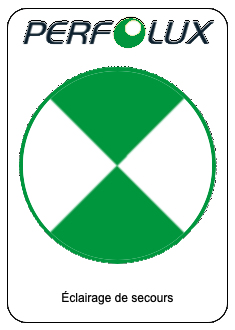

Perfolux
C'est un systeme permettant de mettre en route les eclairages de secours de notre immeubles.
=> Le système des éclairages de secours de notre immeuble n’est pas divisé en zones, il forme un seul ensemble.
=> Cela signifie qu’un incident comme une panne générale de courant ou un fusible «surveillé» qui disjoncte (c.f. mardi dernier), où qu’il se situe, déclenche l’allumage général de tous les éclairages de secours de l’immeuble.
=> La correction de l’incident provoque automatiquement l’extinction des éclairages de secours (c.f. mardi dernier: quand j’ai relevé le fusible à l’origine de la panne).
=> Les fusibles «surveillés» sont ceux qui sont marqués avec l’autocollant vert  .
=> Un autre système concerne les exutoires de fumées de chaque entrée.
=> L’électronique qui gère tout ça a été mise à jour il y a quelques mois.
=> Il n’y a pas d’alarme transmise en cas d’incident. Perfolux n’a pas de connexion à distance sur notre installation. Et cela ne semble pas nécessaire ni vraiment utile,... et coûterait plus cher. Une assistance téléphonique est toujours possible.
=> Si un incident provoque l’allumage des éclairages de secours et que l’armoire Perfolux est toujours alimentée, c’est le courant du secteur qui est utilisé. Dans le cas contraire, les batteries sont sollicitées.
=> Le contrat de maintenance avec Perfolux comprend un test complet annuel, et inclut le remplacement des batteries qui ne seraient plus assez performantes (une heure minimum de service continu).